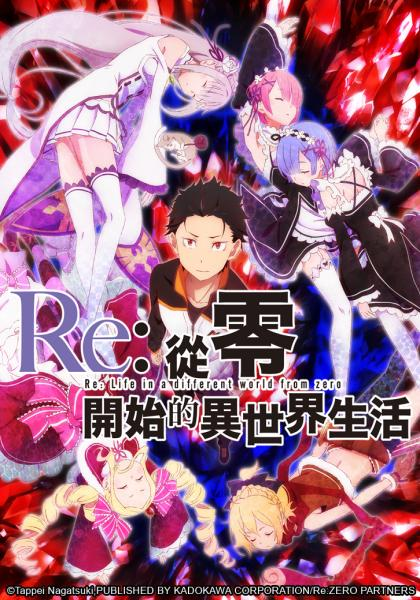

AnimeInterester
Re：從零開始的異世界生活

故事簡介
普通的高中生菜月昴從便利商店回家的路上，突然被召喚到異世界，遭遇強盜面臨性命危機，這時遇到了一位銀髮少女拯救了他，以報恩為名義，昴自告奮勇要幫助少女找東西。好不容易才掌握到線索，昴和少女卻被不明人士攻擊而死亡，但回過神來，昴卻發現自己置身在第一次被召喚到異世界時的所在位置，這是昴得到的能力──「死亡回歸」，死後時間會倒轉回到一開始。昴必須要跨越無數絕望，從死亡的命運中拯救少女！
製作人員
原作：長月達平
角色原案：大塚真一郎
導演：渡邊政治
劇本統籌：横谷昌宏
劇本監修：長月達平
角色設計・總作畫監督：坂井久太
設計工作：コレサワシゲユキ / 灯夢 / 坂井ユウスケ
次要角色設計：小柳達也 / 田中一真
3D導演：軽部優
道具設計：岩畑剛一 / 鈴木典孝
特殊效果：川西美保
怪獸設計：小柳達也
美術監督：高峯義人
美術設定：金城沙綾
色彩設計：坂本いづみ
攝影監督：峰岸健太郎
剪輯：須藤瞳
音響監督：明田川仁
音樂：末廣健一郎
音樂製作人：若林豪
音樂製作：KADOKAWA
聲優名單
菜月昴：小林裕介
愛蜜莉雅：高橋李依
帕克：內山夕實
菲魯特：赤崎千夏
雷姆：水瀨祈
拉姆：村川梨衣
碧翠絲：新井里美
萊因哈魯特·范·阿斯特雷亞：中村悠一
艾爾莎·葛蘭希爾特：能登麻美子
羅茲瓦爾·L·梅札斯：子安武人
普莉希拉·跋利耶爾：田村由香里
庫珥修·卡爾斯騰：井口裕香
阿爾迪巴蘭：藤原啓治
菲利克斯·阿蓋爾：堀江由衣
威爾海姆·范·阿斯特雷亞：堀内賢雄
安娜塔西亞·合辛：植田佳奈
由里烏斯·尤克歷烏斯：江口拓也
貝特魯吉烏斯·羅曼尼康帝：松岡禎丞
各集標題
| 話數 | 標題 | 話數 | 標題 |
|---|---|---|---|
| 1 | 開始的結束與結束的開始 | 13 | 自稱為騎士的菜月昴 |
| 2 | 重逢的魔女 | 14 | 名為絕望之病 |
| 3 | 從零開始的異世界生活 | 15 | 狂氣的外側 |
| 4 | 羅茲瓦爾邸的團圓 | 16 | 豬的欲望 |
| 5 | 遙遠的約定之晨 | 17 | 醜態的盡頭 |
| 6 | 鎖鏈的聲音 | 18 | 從零開始 |
| 7 | 菜月昴的重新開始 | 19 | 白鯨攻略戰 |
| 8 | 在大哭大鬧之後 終於不哭了 | 20 | 威爾海姆．梵．阿斯特雷亞 |
| 9 | 勇氣的意義 | 21 | 對抗絕望的賭注 |
| 10 | 鬼上身的作法 | 22 | 怠惰一閃 |
| 11 | 雷姆 | 23 | 惡毒的怠惰 |
| 12 | 重回王都 | 24 | 自稱騎士和最優秀的騎士 |
| 25 | 就只是這樣的故事 |